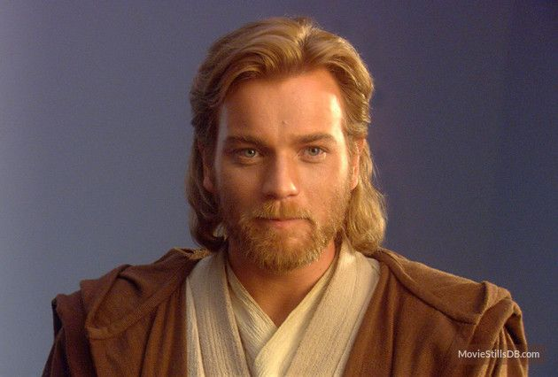

Obi-Wan Kenobi
57 BBY - 0 BBY
In the grand tapestry of the cosmos, there exists a figure whose name reverberates through the annals of history
like the distant echo of a star's dying breath. That figure is Obi-Wan Kenobi, a beacon of hope,
a paragon of virtue, whose life epitomized the essence of the Jedi Order.

"The Force will be with you, always."
The Jedi's Journey
- 57 BBY: Born on the planet Stewjon.
- 44 BBY: Taken as the Padawan learner of Jedi Master Qui-Gon Jinn.
- 32 BBY: Played a pivotal role in the Battle of Naboo, ultimately defeating the Sith apprentice Darth Maul.
- 22 BBY: Knighted and tasked with training Anakin Skywalker.
- 22-19 BBY: Fought as a Jedi General in the Clone Wars, earning numerous victories and accolades.
- 19 BBY: Confronted and defeated his former apprentice, Anakin Skywalker, now Darth Vader, on Mustafar.
- 19 BBY: Rescued and delivered Luke Skywalker to his family on Tatooine, assuming the identity of "Old Ben."
- 19 BBY - 0 BBY: Maintained watch over Luke Skywalker from afar, protecting him from the Empire's reach and guiding him towards his destiny.
- 0 BBY: Provided crucial assistance to the Rebel Alliance, aiding in the destruction of the Death Star.
- 0 BBY: Confronted Darth Vader aboard the Death Star, sacrificing himself to ensure Luke's escape and the ultimate victory of the Rebel Alliance.
Legacy
As we reflect on the life and legacy of Obi-Wan Kenobi, let us not mourn his passing, but celebrate the legacy he leaves behind.
Though his physical form may have faded into the Force, his spirit endures,
a guiding light for all who walk the path of the Jedi.
May his memory be a source of inspiration and strength, reminding us that even in the darkest of times, the Force will always be with us.